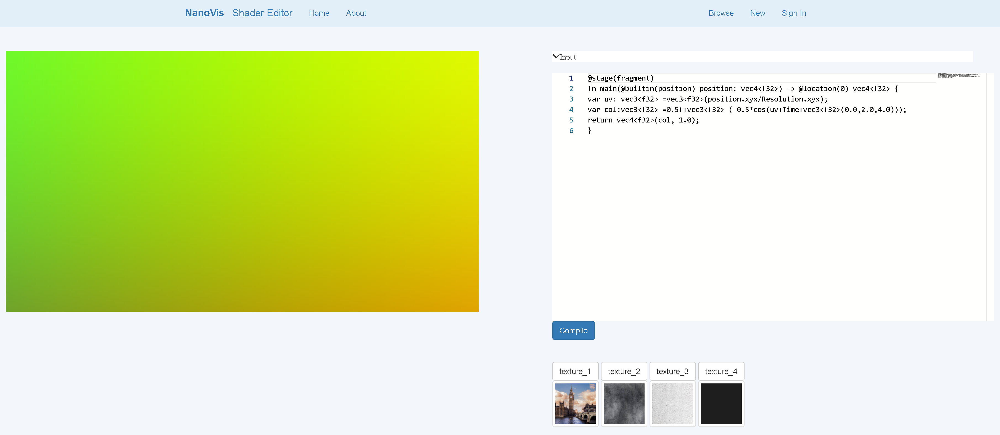

Resources
Applications
MesoCraft
MesoCraft is a mesoscale modeling application for manual, procedural and rule-based modeleing of mesoscame molecular models. The application is based on research presented in Modeling in the Time of COVID-19: Statistical and Rule-based Mesoscale Models.

VolWeb
is a WebGPU and WASM based volume renderer for visualizing multi-channel volumetric data..

Shader Editor
Shader Editor is a WGSL online editor and compiler based on WebGPU/Emscripten and Dawn. Users could write shaders to do the pixel-level operations.
